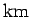
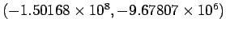
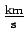
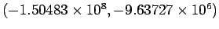
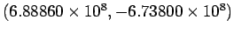

| Measurement | Value |
| Earth's position (  ) |
 |
| Earth's velocity (
 ) |
(1.87503,-29.5800) |
| Moon's position () |
 |
| Moon's velocity ( ) | (1.76133, -30.7543) |
| Asteroid's position () |
 |
| Asteroid's velocity ( ) | (-32.0642, 41.5587) |